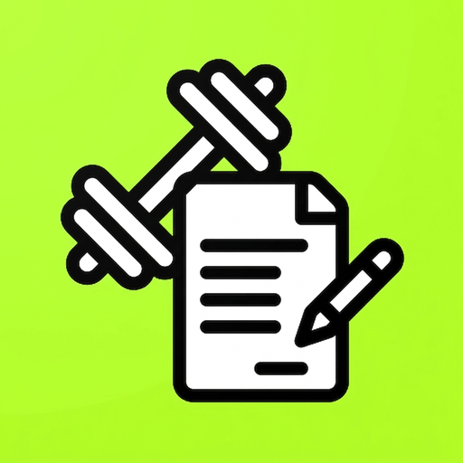
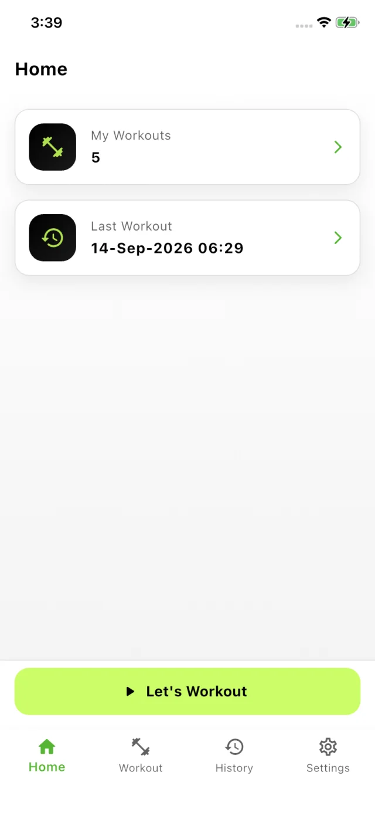
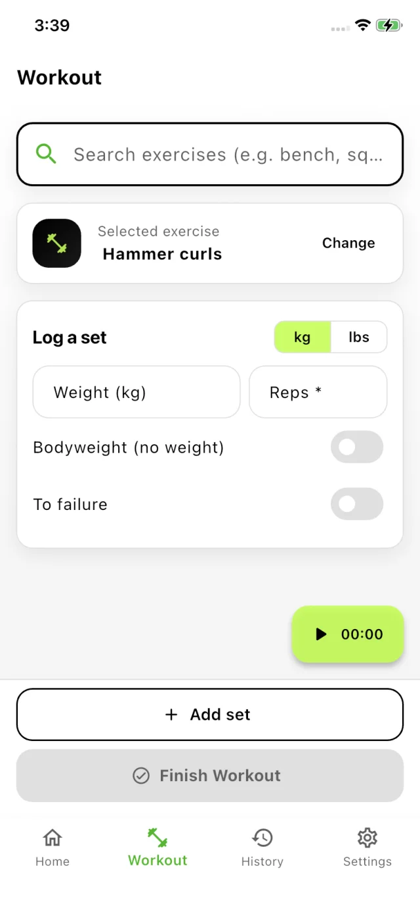
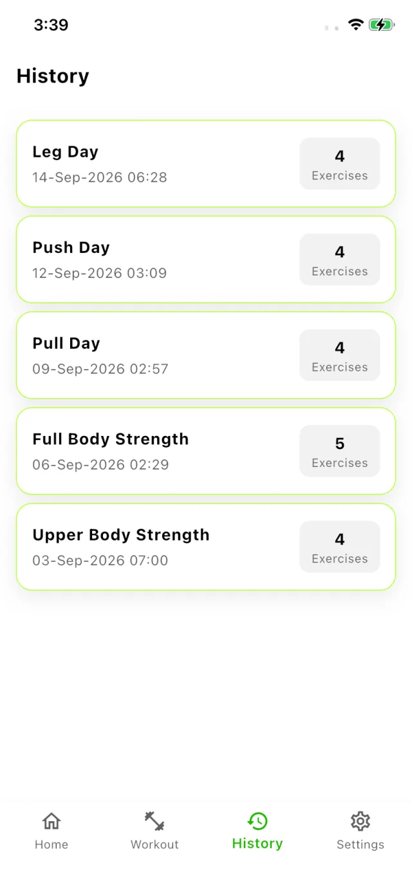

Health & fitness

Easy Workout Logger
Like pen and paper — but better. Begin a workout, pick the exercise, add weight and reps, save. A simple gym log that keeps track of your progress without the setup.

What it is
A notebook works right up until you leave it at home or lose the page you were on. Easy Workout Logger keeps the same simplicity on your phone: begin a workout, select the exercise from the list, add the weight and the repetitions, save. No spreadsheet to maintain, no set-by-set setup — it's like pen and paper, only better.


How it works
Start a workout
Name the session and start logging. The home screen keeps count of how many workouts you've done and when the last one was.
Log your sets
Search the exercise list — bench, squat, curls — add the weight and the reps, then save. Weight is optional: mark a set as bodyweight or to failure instead.
Look back
Workouts land in History with their date and exercise count, so you can always see what you did and when you did it.
Questions
Anything else? Email contact@offleg.com.
Is Easy Workout Logger free?
Yes, it's free to download and use on iPhone, iPad and Android.
How do I log a workout?
Start a workout, pick the exercise from the list, enter the weight and reps, and save the set. Add as many sets as you like, then finish the workout and it goes straight into your history.
Can I log bodyweight or to-failure sets?
Yes. Weight is optional — mark the set as bodyweight when you're not adding anything, or as to failure when you keep going until you can't.
Does it support pounds as well as kilograms?
Yes. There's a kg / lbs switch right on the logging screen, so you can enter your sets in whichever unit your gym uses.
Is there an Android version?
Yes. Easy Workout Logger is free on Google Play for Android phones, as well as on the App Store for iPhone and iPad.